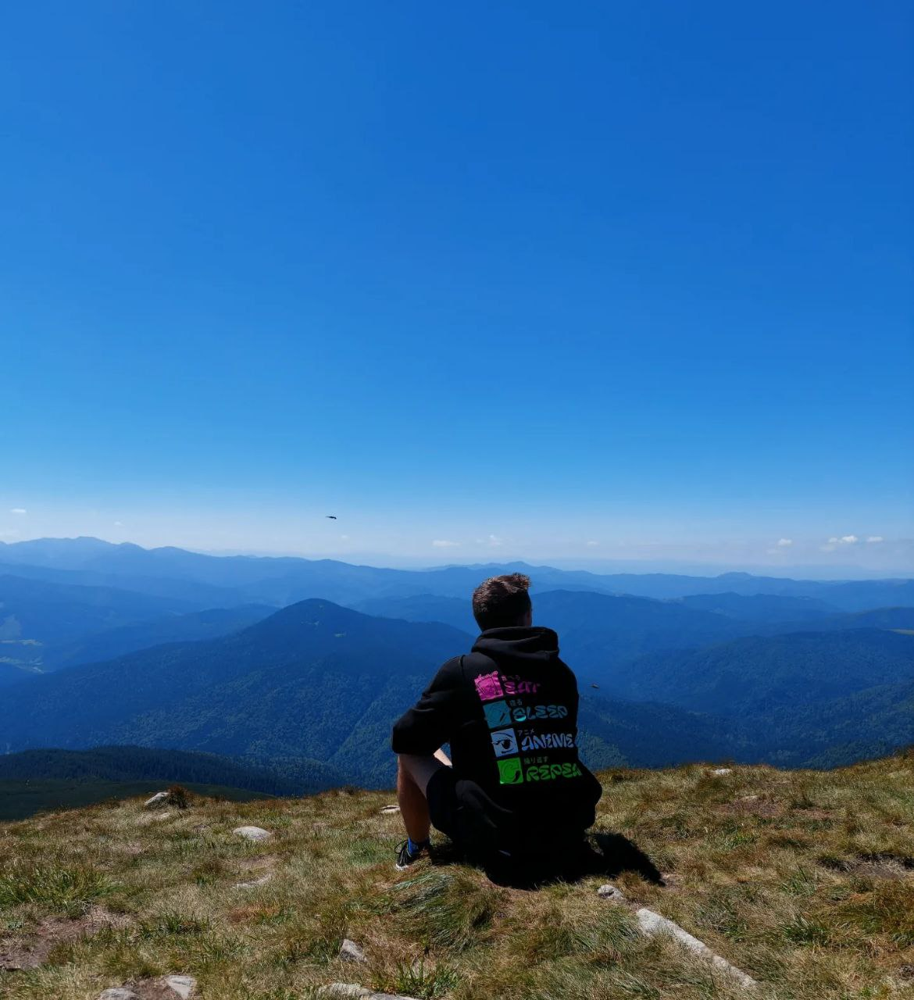

About Me

Hello! I'm Paul Ponochovnyi, a passionate web developer based in Dnipro, Ukraine. My journey into web development began with a curiosity for how websites work and a desire to create engaging user experiences. Since then, I've been on an exciting adventure, constantly learning and evolving in the world of technology.
Over the years, I've honed my skills in HTML, CSS, and JavaScript, building responsive and accessible websites. I'm particularly interested in front-end development, but I also enjoy working with back-end technologies to create full-stack applications. I'm always keen to bring designs to life in the browser and ensure that users have a seamless experience across devices.
As a developer, I believe in writing clean, maintainable, and scalable code. I follow industry best practices and love collaborating with teams to bring projects to fruition. Whether it's a simple website or a complex web application, I'm always focused on delivering high-quality results.
Beyond coding, I appreciate the importance of continuous learning and staying updated with the latest web technologies. I'm currently exploring frameworks like React and Vue.js, as well as deepening my knowledge of server-side development using Node.js. I also enjoy building projects with modern tools like Webpack, Git, and Docker to streamline my workflow.
When I'm not coding, I enjoy contributing to open-source projects, attending local tech meetups, and sharing knowledge with the developer community. I'm a strong believer in the power of collaboration and am always eager to learn from others and share my own experiences.
Outside of web development, I have a keen interest in photography, hiking, and traveling. I love capturing moments from my travels and sharing them with friends and family. I find that creativity, whether through coding or photography, plays an essential role in my life.